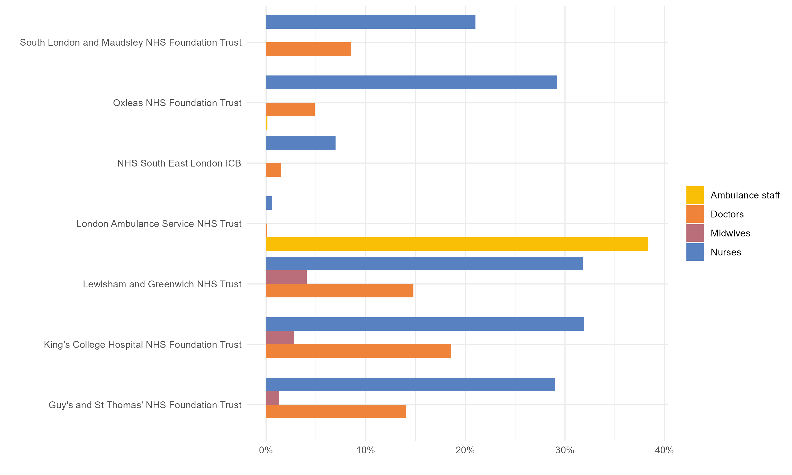

staff_group <- readRDS(file = "workforce_staff_group.rds")Map and Nest
purrr
R
tutorial
I want to share a framework that I like using occasionally for data analysis. It’s the nest-and-map and it’s helped me countless times when I’m working with related datasets. By combining {purrr} mapping with {tidyr} nesting, I can keep my analysis steps linked, allowing me to easily track from a summary or plot, back to the original data.
The main funtions we’ll need are
tidyr::nest()dplyr::mutate()purrr::map()purrr::walk()
Example on NHS workforce statistics
The NHS workforce statistics are official statistics published monthly for England.
I want to perform an analysis for each of the 42 integrated care systems (ICS). The {tidyr} nest() function creates a list-column, where each cell contains a mini dataframe for each grouping.
Let’s group by ICS, and call the nested data column raw_data.
group_by_ics <- staff_group |>
tidyr::nest(raw_data = -ics_name)The new column is a list-column, with each cell containing an entire tibble of data relating to that individual ICS.
#' echo: false
head(group_by_ics)# A tibble: 6 × 2
ics_name raw_data
<chr> <list>
1 South East London <tibble [8 × 6]>
2 North East London <tibble [7 × 6]>
3 North Central London <tibble [12 × 6]>
4 North West London <tibble [10 × 6]>
5 South West London <tibble [8 × 6]>
6 Devon <tibble [7 × 6]> We can grab these mini datasets in the usual way and explore them interactively.
group_by_ics$raw_data[[1]]# A tibble: 8 × 6
organisation_name total hchs_doctors nurses_health_visitors midwives
<chr> <dbl> <dbl> <dbl> <dbl>
1 Total 58394 7108 14939 926
2 Guy's and St Thomas' NHS F… 21361 3003 6196 281
3 King's College Hospital NH… 13158 2443 4202 375
4 Lewisham and Greenwich NHS… 6617 979 2103 271
5 London Ambulance Service N… 7050 4 44 0
6 NHS South East London ICB 617 9 43 0
7 Oxleas NHS Foundation Trust 4094 200 1196 0
8 South London and Maudsley … 5496 471 1155 0
# ℹ 1 more variable: ambulance_staff <dbl>Next, let’s apply some simple processing, say converting absolute numbers into percentages, to each of the ICSs in turn.
We use mutate() to create a new list-column staff_percent and map() to apply the processing function to each cell in turn. 1
See function definition for convert_percent()
#' Convert percent
#' @param raw_staff Tibble containing organisation_name, total and a number of staff categories
#' @return Tibble like raw_staff but with staff categories represented as percentages rather than absolute numbers
convert_percent <- function(staff){
staff |>
dplyr::mutate(dplyr::across(.cols = -c(organisation_name, total),
.fns = \(x)x/total)) |>
dplyr::rename("Doctors" = "hchs_doctors",
"Nurses" = "nurses_health_visitors",
"Ambulance staff" = "ambulance_staff",
"Midwives" = "midwives")
}processed_staff <-
group_by_ics |>
dplyr::mutate(
staff_percent = purrr::map(raw_data, convert_percent)
)Where I think this map-and-nest process really comes into its own is creating plots. Often, I find myself wanting to create a couple of different plots for each grouping, and then optionally save the plots with sensible names. Particularly in the analysis stage, I like having these plots in the same row as the raw data, so I can quickly compare and validate.
I’ve created two functions, plot_barchart() and plot_waffle() which take the data and create charts.
See definition for plot_barchart() & plot_waffle()
#' Plot barchart
#' Makes a bar chart of staff perentages by organisation
#' @param df tibble of staff data in percent format
plot_barchart <- function(df) {
df |>
dplyr::filter(organisation_name != "Total") |>
dplyr::select(-total) |>
tidyr::pivot_longer(cols = -c(organisation_name), names_to = "job", values_to = "percent") |>
ggplot2::ggplot(ggplot2::aes(x = percent, y = organisation_name, fill = job)) +
ggplot2::geom_col(position = "dodge") +
ggplot2::scale_x_continuous(labels = scales::percent_format(scale = 100)) +
ggplot2::labs(x = "", y = "") +
StrategyUnitTheme::scale_fill_su() +
ggplot2::theme_minimal() +
ggplot2::theme(legend.title = ggplot2::element_blank())
}
#' Plot waffle
#' Makes a waffle chart to visualise staff breakdown at an ICS level
#' @param raw_staff count data of staff
#' @param title Title for the graphic
plot_waffle <- function(raw_staff, title) {
waffle_data <-
raw_staff |>
dplyr::filter(organisation_name == "Total") |>
dplyr::select(-total, -organisation_name) |>
tidyr::pivot_longer(cols = dplyr::everything(), names_to = "names", values_to = "vals") |>
dplyr::mutate(vals = round(vals / 100))
ggplot2::ggplot(waffle_data, ggplot2::aes(fill = names, values = vals)) +
waffle::geom_waffle(n_rows = 8, size = 0.33, colour = "white") +
ggplot2::coord_equal() +
ggplot2::theme_void() +
ggplot2::theme(legend.title = ggplot2::element_blank()) +
ggplot2::ggtitle(title)
}Again, using mutate() I can create a new column called barchart and I can map() the function plot_barchart(), applying it to each row at a time.
graphs <-
processed_staff |>
dplyr::mutate(
barchart = purrr::map(staff_percent, plot_barchart)
) The resulting column barchart is again a list-column, but this time instead of containing a tibble, it holds a ggplot object. A whole ggplot in a single cell. 2
If we want to pass two arguments to our function, we can replace map() with map2(). Here we’re using map2() to pass the ics_name column to use as a title in our waffle plot. 3
graphs <-
processed_staff |>
dplyr::mutate(
waffle = purrr::map2(raw_data, ics_name,
\(data, title) plot_waffle(data, title)
)
) 
Putting it all together
All of these mutate() steps can actually be called in one step. Here’s the full workflow again in full after a little refactor. I’ve also used pivot_longer() to move the two plotting columns into a single plot column. This will make it easier for me to generate nice filenames, and save the plots.
results <-
staff_group |>
tidyr::nest(raw_data = -ics_name) |>
dplyr::mutate(
staff_percent = purrr::map(raw_data, convert_percent),
barchart = purrr::map(staff_percent, plot_barchart),
waffle = purrr::map2(raw_data, ics_name, \(data, title) plot_waffle(data, title))
) |>
tidyr::pivot_longer(cols = c(barchart, waffle), names_to = "plot_type", values_to = "plot") |>
dplyr::mutate(filename = glue::glue("{snakecase::to_snake_case(ics_name)}_{plot_type}.png"))The walk() family of functions in {purrr} are used when the function you’re applying does not return an object, but is being used for it’s side-effect, for example reading or writing files.
Here we call walk2(), passing in both the filename column and the plots column are arguments to save all the plots.
purrr::walk2(
results$filename,
results$plot,
\(filename, plot) ggplot2::ggsave(file.path("plots", filename), plot, width = 10, height = 6)
)By keeping everything together in one nested structure, I personally find it much easier to keep track of my analyses. If you’re doing a more complex or permenant analysis, you might want to consider setting up a more formal data processing pipeline, and following RAP principals.
Footnotes
In this example, we actually didn’t need to nest first. We could have performed the
mutate()step on the full dataset.↩︎This totally blew my mind the first time I saw it 🤯.↩︎
We’re mapping the relationship between the two inputs and the
plot_waffle()with an anonymous function. This shorthand syntax for anonymous functions came in R v 4.1.0. For compatibility with older versions of R, you’ll need the~operator. For the different ways you can specify functions in {purrr} see the help file.↩︎